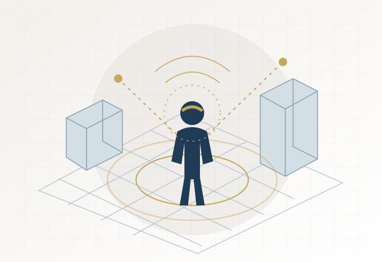
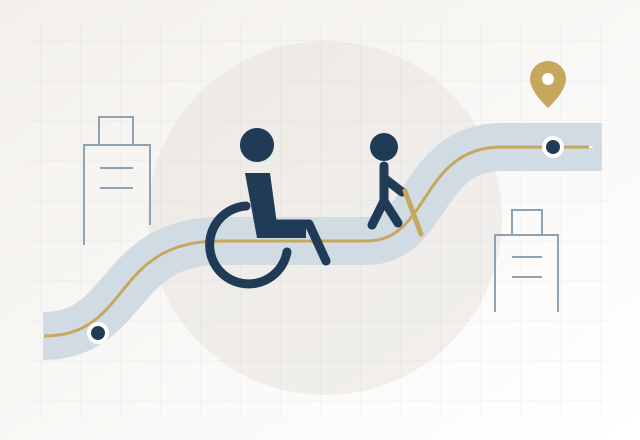
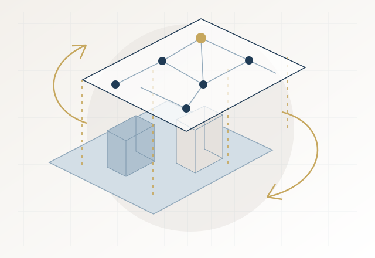
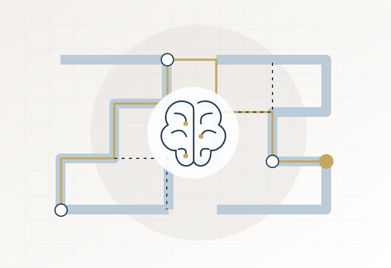
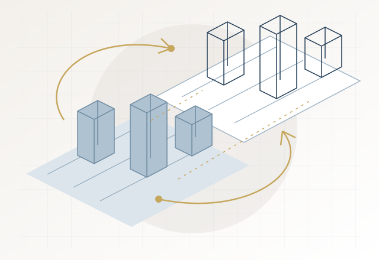

Driven by the explosive growth of spatial big data, pervasive artificial intelligence (AI), and immersive AI-enabled sensing technologies, GeoX Lab integrates geospatial artificial intelligence (GeoAI), innovative sensing technologies, and human behavioural geography to build a multi-dimensional urban computing platform. Our research outputs lay solid theoretical and practical support for inclusive smart city development, resilient urban transportation, and human-centred urban spatial optimisation. Moving beyond conventional urban performance evaluation, our research expands into five interdisciplinary dimensions to decode human spatial behaviours and reshape future urban systems.

RESEARCH DIRECTION / 01
Immersive geospatial perception
We pioneer individualised immersive geospatial perception. Leveraging AI and wearable sensing devices, our lab redefines high-resolution individual spatial perception paradigms. We capture fine-grained personal sensing data, reconstruct human real-time environmental perception mechanisms, and break through the limitations of traditional macroscopic urban observation to realise human-centred spatial analysis.

RESEARCH DIRECTION / 02
Disability geography & inclusive mobility
We establish a novel framework of disability geography and inclusive mobility research. Focusing on underrepresented and vulnerable social groups, including people with disabilities and elderly populations, we systematically investigate their unique spatial perception patterns, travel barriers, and daily mobility behaviours. Our research provides quantitative spatial evidence for barrier-free urban planning, inclusive transportation optimisation, and age-friendly city construction, supporting equitable urban governance.

RESEARCH DIRECTION / 03
Online–offline human–environment interactions
We explore the coupling mechanism of online-offline human-environment interactions. In the era of ubiquitous digital life, human behavioural activities span both cyber and physical spaces. Our lab focuses on the synergies and contradictions between virtual social behaviours and physical spatial activities, revealing the spatio-temporal coupling rules of dual-space human behaviours. This line of research delivers new analytical perspectives and empirical foundations for emerging urban and economic geography studies.

RESEARCH DIRECTION / 04
Spatial cognition in the AI era
We investigate spatial cognitive mechanisms in the AI era. Inspired by the Nobel Prize-winning discoveries on spatial navigation, we utilise spatial big data and AI modelling to observe, quantify, and interpret human bounded rationality in spatial decision-making. We aim to systematically analyse classic cognitive phenomena such as spatial memory loss, route selection bias, and environmental recognition deviation, uncovering the inherent cognitive laws of human spatial activities.

RESEARCH DIRECTION / 05
Human digital twins & interaction environments
We develop human digital twin and human-centric interaction environments. We commit to constructing digital twin urban simulation platforms and immersive virtual geographic environments. By integrating multi-source spatial data and GeoAI algorithms, we aim to realise intelligent training and interactive simulation for artificial agents in virtual urban spaces. This framework bridges the virtual-physical gap, enabling future intelligent agents to possess human-like spatial perception and interactive capabilities for real-world urban scenarios.